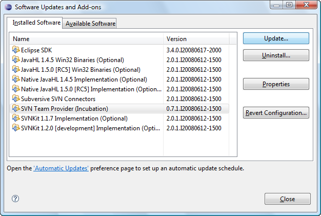

Subversive update instructions (Eclipse.org version installed)
Subversive can be simply updated from within Eclipse using update manager. To update Subversive:
-
Start Eclipse and select menu item 'Help > Software Updates...'

-
On the 'Installed Software' tab group select the features to update and click the 'Update...' button.
